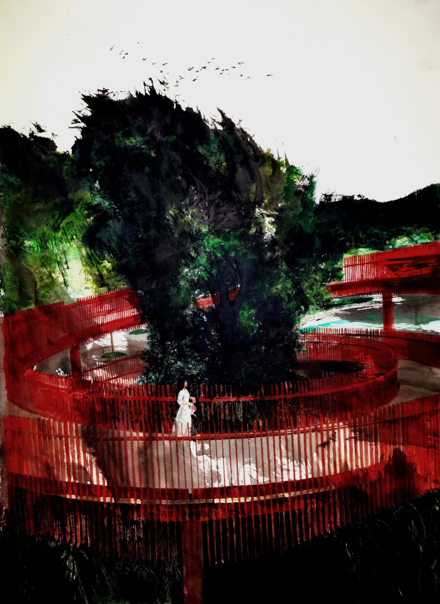

Kai Feng from the South
凯风自南

- Artwork ID / 作品编号
- KW-W-000007
- Year / 年份
- 2025
- Medium / 媒介
- Watercolor on paper / 纸本水彩
- Dimensions / 尺寸
- 112 × 80 cm (H × W / 高 × 宽)
Kai Feng from the South takes its title from a phrase in the Book of Songs. A vermilion circular walkway unfolds around an ancient tree; a woman in white moves slowly through it, while birds open a wider scale above. The contrast between red and deep green keeps the constructed path and plant life equally present, and the circular route returns the figure’s movement to the tree and its site. Drawing on the southern breeze as an image of warmth and nurture, the work considers how protection, passage, and coexistence can occupy the same space.
《凯风自南》取意于《诗经》中的“凯风自南”。朱红色环形步道围绕古树展开，一位白衣女性缓慢穿行，飞鸟在上方打开更远的尺度。红与深绿的对照使人工结构和植物生命都保持鲜明，同时，环形路径把人物的移动重新带回树木与场所。作品借南风所含的温暖与滋养之意，观察守护、通行和共处如何在同一空间中成立。